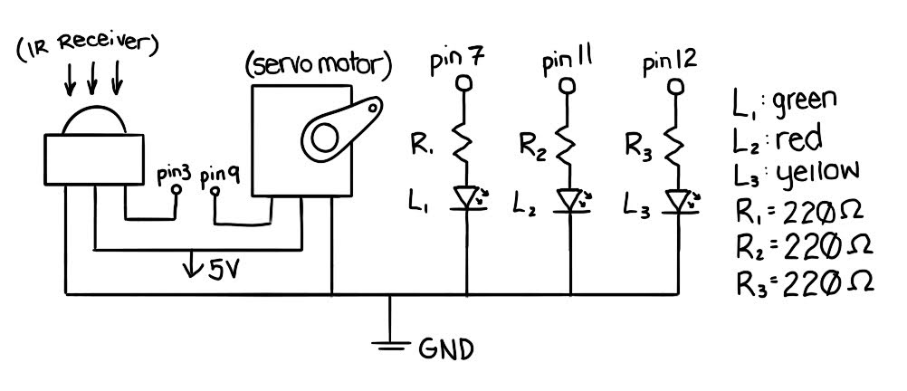
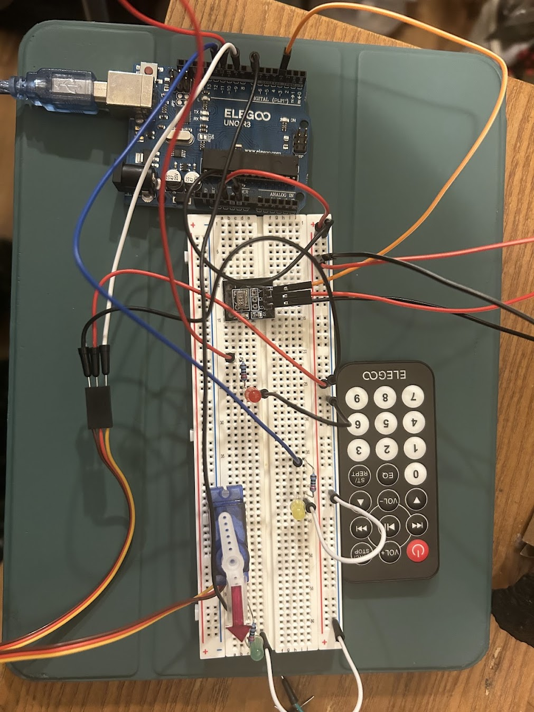
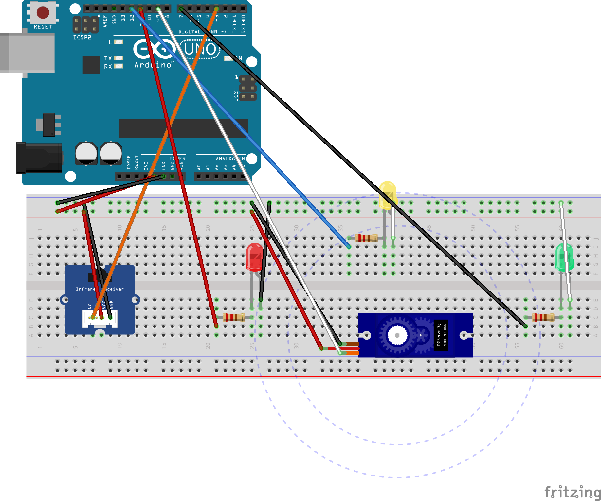
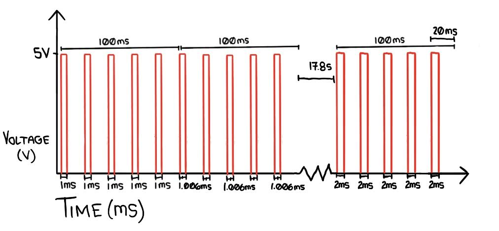

Here is where all the documentation for Assignment 4: Libraries!
The prompt is to use the following:

The IR receptor is connected to pin 3, the servo motor is connected to pin 9, and the LEDs are connected to pins 7, 11, and 12. The IR receptor and servo motor are powered through the same 5V connection, and all components are connected to the same ground. The LEDs are red, yellow, and green, so they all have the same voltage drop of 1.8V. Using 5V minus a 1.8V drop for the LED, and 20mA (or 0.02A) of current (based on the optimal level to power these LEDs), I can use Ohm's law to calculate that each requires 160 ohms of resistance. Since I don't have a 160 ohm resistor, I rounded up to 220 ohms. I rounded up because, according to Ohm's law, this would slightly reduce the current to around 14.5mA, which only slightly reduces the brightness of the LED. If I rounded down, the current would increase beyond 20mA, which would risk the LED burning out.


I started by connecting 5V to the power rail of the breadboard, and ground to the ground rail. The IR receptor is connected to pin 3 on the Arduino, then to ground and power through the breadboard rails. The servo motor is connected to pin 9 on the Arduino, then to ground and power, also through the breadboard rails. The red LED is connected to pin 11 along with a 220 ohm resistor, then to ground through the breadboard rail. Similarly, the yellow LED is connected to pin 12, and the green LED is connected to pin 7. Both are also connected to their own 220 ohm resistors, then to ground through the breadboard rail. Also, for the function of my circuit, I used clear tape to attach the servo motor and IR receptors to the breadboard. I also taped a paper arrow to one arm of the servo motor attachment in order to emphasize my circuit's function, and for fun.
// Code references from:
// https://www.makerguides.com/ir-receiver-remote-arduino-tutorial/
// https://learn.sparkfun.com/tutorials/ir-control-kit-hookup-guide/all#:~:text=Download%20and%20Install%20Ken%20Shirriff%27s,Ken%20Shirriff%27s%20IRremote%20Library%20%28ZIP%29
// https://github.com/Arduino-IRremote/Arduino-IRremote?tab=readme-ov-file#tutorials
// ChatGPT used for debugging
// include IR Remote library
#include <IRremote.hpp>
// include Servo Motor library
#include <Servo.h>
// define IR Receiver pin as pin 3
#define IRpin 3
// store codes for used buttons in 32-bit HEX values
const uint32_t LEFT = 0xBB44FF00;
const uint32_t RIGHT = 0xBC43FF00;
const uint32_t CENTER = 0xBF40FF00;
// store pin numbers for each LED
const int rLED = 11;
const int yLED = 12;
const int gLED = 7;
// store recieved code
uint32_t code;
// define servo
Servo servo;
void setup() {
// begin serial communication for debugging and tracking
Serial.begin(9600);
// initiate IR reciever on previously defined pin and enable LED feedback for debugging
IrReceiver.begin(IRpin, ENABLE_LED_FEEDBACK);
// attach servo variable to respective pin
servo.attach(9);
// set up LEDs as output
pinMode(rLED, OUTPUT);
pinMode(yLED, OUTPUT);
pinMode(gLED, OUTPUT);
}
void loop() {
// run if IR has recieved and decoded a signal
if (IrReceiver.decode()) {
// store hex value of input
code = IrReceiver.decodedIRData.decodedRawData;
// print code for debugging
Serial.print("Received code:");
Serial.println(code, HEX);
// resume recieving
IrReceiver.resume();
}
// if hex code corresponds to right, position motor hand right, turn on green LED, and turn off other LEDs
// else if hex code corresponds to left, position motor hand left, turn on red LED, and turn off other LEDs
// if hex code corresponds to center, position motor hand center, turn on yellow LED, and turn off other LEDs
// also print direction to serial monitor for decoding
// and delay 30ms to give time for motor to reach position
if (code == RIGHT) {
servo.write(0);
Serial.println("right");
digitalWrite(gLED, HIGH);
digitalWrite(rLED, LOW);
digitalWrite(yLED, LOW);
delay(30);
} else if (code == LEFT) {
servo.write(180);
Serial.println("left");
digitalWrite(rLED, HIGH);
digitalWrite(gLED, LOW);
digitalWrite(yLED, LOW);
delay(30);
} else if (code == CENTER) {
servo.write(90);
Serial.println("center");
digitalWrite(yLED, HIGH);
digitalWrite(gLED, LOW);
digitalWrite(rLED, LOW);
delay(30);
}
}
Firstly, to find the HEX codes of the used buttons on the IR Remote, I used a simple program that printed the code of received input. The most important line of this code was "IrReceiver.printIRResultShort(&Serial)", which is what printed the details of the received signals to the serial monitor. Once I had that, I store those HEX codes in variables for later use in the main code. Further code explanations are found in the comments within the code.

1: Say you are using a servo motor you attach to pin 9. In your loop() you have the following code:
void loop() {
for (pos = 0; pos <= 180; pos += 1) {
myservo.write(pos);
delay(100);
}
}
Draw a graph with the x-axis as time and the y-axis as voltage at pin 9 with respect to ground.

The PWM of the servo motor works in cycles of 20ms. At a position of 0, there are 1ms pulses every cycle. At a position of 90, there are 1.5ms pulses every cycle. At a position of 180, there are 2ms pulses every cycle. For each pulse, the voltage goes from 0V to 5V, then back to 0V. The code uses a delay of 100ms, meaning there are 5 pulses for each position value (100/20 = 5). Therefore, the graph shows 5 pulses at each position, with the pulse width increasing by 1/180ms (around 0.006ms) every 100ms. To graph this, I displayed the first two 100ms segments, then jump to the last segment, when the position is 180. To go from 0 to 180, it should take 18.1s if each position value, including 0, takes 100ms. Therefore, the jump from the second position (ending at 200ms) to the last (starting at 18s) is 17.8s.
2: Your input device is slightly broken, leading it to give us an erroneous reading 1% of the time. How can we address this? Answer in (pseudo)code.
To handle erroneous readings, I'd first run the device and note the ranges of the readings. Based on the average difference between accurate and erroneous readings, I'd use a function to disregard any readings that are greater than, for example, 250% of the previous reading. I'd start by assigning the first sensor value to a previous value variable (e.g. prevSensorVal), and the next to a current value variable (e.g. sensorVal). For every next reading, I'd assign sensorVal to prevSensorVal and store the new reading in sensorVal. Then, if sensorVal is greater than 2.5*prevSensorVal (250%), I'd assign the value of prevSensorVal to sensorVal in order to disregard the erroneous reading. If needed, I could also use a similar function to disregard values below a certain threshold, like 0.1*prevSensorVal (10%).
3: Your input device is slightly noisy, leading the measurement to randomly deviate from the true measurement up or down by 10%. How can we address this? Answer in (pseudo)code.
If my measurements were always off by +/- 10%, I'd use an averaging function to try and compensate. I'd start my loop by creating a total value and assigning 0. Then, inside a for-loop with a maximum iteration of 10, I'd add every value to the total. Then, after the for-loop, I'd divide total by 10, assign that value to a variable called result, and print result to the serial monitor.
4: Reflection on AI use:
After adding the LEDs to my circuit, it started exhibiting erratic behavior. When I couldn't figure out what was wrong, I explained my issue to ChatGPT with the following prompt: "Here's my code [code inserted here]. i'm having some weird behavior. 1. the red and yellow LEDs are very dim when on 2. the green LED flickers along with the IR receiver when it's not facing right/green 3. when facing right, the green LED doesn't turn on, but the flickering stops. what is going on?". The AI gave several debugging suggestions, two of which I followed. Firstly, I had completely forgotten to set up my LEDs as outputs. Secondly, my green LED was using pin 13, which has a built-in LED. The LED feedback of the IR receiver was also using the built-in LED, which caused green LED to flicker along with it. So, I added the proper setup code and switched the green LED to pin 7, and my problems were solved!